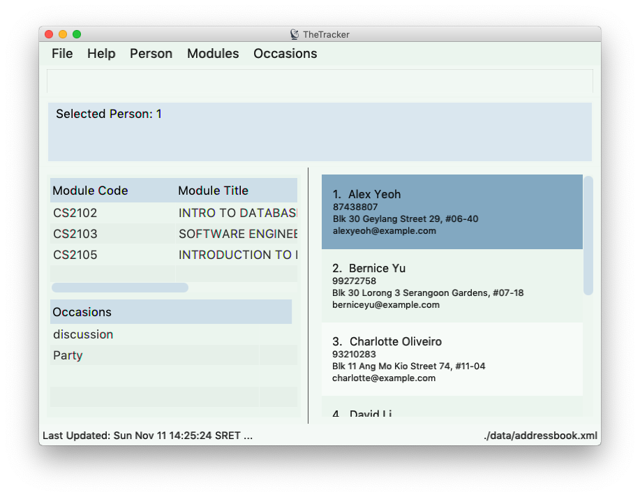

By: Team W10-01 Since: Aug 2018 Licence: MIT
- 1. Introduction
- 2. Quick Start
- 3. Features
- 3.1. Viewing help :
help - 3.2. Adding a person:
add - 3.3. Listing all persons :
list - 3.4. Editing a person :
edit - 3.5. Locating persons by name:
find - 3.6. Deleting a person :
delete - 3.7. Listing entered commands :
history - 3.8. Undoing previous command :
undo - 3.9. Redoing the previously undone command :
redo - 3.10. Grouping content together by tag:
group - 3.11. Show command history:
history - 3.12. Import information from external platform:
import - 3.13. Autocomplete
- 3.14. Exiting the program :
exit - 3.15. Saving the data
- 3.16. Encrypting data files
[coming in v2.0]
- 3.1. Viewing help :
- 4. FAQ
- 5. Command Summary
1. Introduction
TheTracker is for NUS students who prefer to use a desktop app for managing contacts, events or modules. More importantly, TheTracker is optimized for those who prefer to work with a Command Line Interface (CLI) while still having the benefits of a Graphical User Interface (GUI). If you can type fast, TheTracker can get your contact management tasks done faster than traditional GUI apps whilst being able to keep track with your friends! Interested? Jump to the Section 2, “Quick Start” to get started. Enjoy!
2. Quick Start
-
Ensure you have Java version
9or later installed in your Computer. -
Download the latest
addressbook.jarhere. -
Copy the file to the folder you want to use as the home folder for your Address Book.
-
Double-click the file to start the app. The GUI should appear in a few seconds.
 -
Type the command in the command box and press Enter to execute it.
e.g. typinghelpand pressing Enter will open the help window. -
Some example commands you can try:
-
list: lists all contacts -
addn/John Doe t/98765432 t/johnd@example.com t/John street, block 123, #01-01: adds a contact namedJohn Doeto the Address Book. -
**
delete n/John Doe: deletes the person John Doe from TheTracker. -
exit: exits the app
-
-
Refer to Section 3, “Features” for details of each command.
3. Features
Command Format
-
Words in
UPPER_CASEare the parameters to be supplied by the user e.g. inadd n/NAME,NAMEis a parameter which can be used asadd n/John Doe. -
Items in square brackets are optional e.g
n/NAME [t/VALUE]can be used asn/John Doe t/friendor asn/John Doe. -
Items with
… after them can be used multiple times including zero times e.g.[t/TAG]…can be used ast/friend,t/friend t/familyetc.
3.1. Viewing help : help
Format: help
3.2. Adding a person: add
Adds a person, module or an event to the address book
Format to add person: add n/NAME t/VALUE OF TAG ONE t/VALUE OF TAG TWO t/VALUE OF TAG THREE [x/TAG VALUE]…
| A person, module or an event can have any number of tags (including 0) and in no particular order. |
The values a x can take:
* n: Name of person to be added.
* m: Name/Code of the module to be added.
* e: Name of the event to be added.
* t: Keyword to tag the person, event or module with.
Examples:
-
add n/Betsy Crowe t/friend t/betsycrowe@example.com t/criminal -
add m/CS2103 t/Software Engineering t/Dr. Damith -
add e/Birthday t/My friend’s Birthday!
3.3. Listing all persons : list
Shows a list of all persons in the address book.
Format: list
3.4. Editing a person : edit
Edits an existing person in the address book.
Format: edit x/VALUE [t/VALUE TO EDIT | NEW VALUE] [t/VALUE TO EDIT | NEW VALUE] [t/TAG]…
-
Edits the person, name of module specified by x - "n | m | e" followed by the VALUE which is the value of the person, module or event assigned during the add stage.
-
At least one value to edit must be provided.
-
Existing values will be updated to the input values.
-
When editing tags, the existing tags of the person will be removed i.e adding of tags is not cumulative.
-
You can remove all the person’s tags by typing
t/without specifying any tags after it. *
Examples:
-
edit n/Betsy Crowe t/friend | enemy t/betsycrowe@example.com | johndoe@example.com
Edits the tag of Betsy Crowe from friend to enemy, and the tag from betsycrowe@example.com to johndoe@example.com.
3.5. Locating persons by name: find
Finds a person, module or event whose tags contain any of the given keywords.
Format: find x/VALUE t/VALUE ONE t/VALUE TWO…
Values a x can take:
* n: Name of the Person you would like to find.
* m: name/Code of the module you would like to find.
* e: The event name that you would like to find.
Examples:
-
find n/John
ReturnsjohnandJohn Doe -
find n/Betsy n/Tim n/John
Returns any person having namesBetsy,Tim, orJohn
3.6. Deleting a person : delete
Deletes the specified person, event or module from the address book.
Format: delete x/VALUE
The value of x is:
* n: Represents that a person will be deleted.
* m: Represents that a module will be deleted.
* e: Represents that an event will be deleted.
Examples:
-
delete n/John Doe
Deletes the person whose name is John Doe. -
delete m/CS2103
Deletes the module whose value is CS2103. -
delete e/Birthday
Deletes the event whose value is Birthday.
3.7. Listing entered commands : history
Lists all the commands that you have entered in reverse chronological order.
Format: history
|
Pressing the ↑ and ↓ arrows will display the previous and next input respectively in the command box. |
3.8. Undoing previous command : undo
A command to allow the user to undo previous commands.
Command Syntax:
undo:
This command will undo the user’s previous command.
undo [number]:
The number of commands you want to undo.
This command will undo a certain number of commands. The number should be at least 1. If the number exceeds the number of operations that has been done, the application will undo all the previous operations.
|
Undoable commands: those commands that modify the address book’s content ( |
Examples:
-
delete 1
list
undo(reverses thedelete 1command) -
select 1
list
undo
Theundocommand fails as there are no undoable commands executed previously. -
delete 1
clear
undo 2(reverses theclearcommand and thedelete 1command)
3.9. Redoing the previously undone command : redo
A command to allow the user to redo previously undone commands.
Command Syntax:
redo:
This command will redo the user’s previous undone command.
redo [number]:
The number of undone commands you want to redo.
This command will redo a certain number of undone commands. The number should be at least 1. If the number exceeds the number of operations that has been undone, the application will redo all the previous operations that have been undone.
Examples:
-
delete 1
undo(reverses thedelete 1command)
redo(reapplies thedelete 1command) -
delete 1
redo
Theredocommand fails as there are noundocommands executed previously. -
delete 1
clear
undo(reverses theclearcommand)
undo(reverses thedelete 1command)
redo 2(reapplies thedelete 1command and theclearcommand)
3.10. Grouping content together by tag: group
A command to allow the user to group students under a certain group tag.
Command Syntax:
group [group_name] [keyword]:
group_name: The name of this group of people.
keyword: n/NAME The name of the person you want to put in this group.
i/INDEX The index of the person you want to put in this group.
3.11. Show command history: history
A command to allow the user to see the history of commands used within the address book.+
Command Syntax: history
3.12. Import information from external platform: import
A command to allow the user to see the history of commands used within the address book.+
Command Syntax: import [keyword]
keyword: One of either: IVLE, NUSMODS, MYISIS.
3.13. Autocomplete
A feature that gives a list of potential matches based on substrings of a result that a user types into any other command.
3.14. Exiting the program : exit
Exits the program.
Format: exit
3.15. Saving the data
Address book data are saved in the hard disk automatically after any command that changes the data.
There is no need to save manually.
3.16. Encrypting data files [coming in v2.0]
{explain how the user can enable/disable data encryption}
4. FAQ
Q: How do I transfer my data to another Computer?
A: Install the app in the other computer and overwrite the empty data file it creates with the file that contains the data of your previous Address Book folder.
5. Command Summary
-
Add
add n/NAME t/VALUE ONE t/VALUE TWO t/VALUE THREE [t/VALUE]…
e.g.add n/James Ho t/22224444 t/jamesho@example.com t/123, Clementi Rd, 1234665 t/friend t/colleague -
Clear :
clear -
Delete :
delete x/VALUE
e.g.delete n/James Ho -
Edit :
edit INDEX [x/VALUE] [t/VALUE TO EDIT | NEW VALUE] [t/VALUE TO EDIT | NEW VALUE] [t/TAG]…
e.g.edit 2 n/James Lee t/jameslee@example.com | johndoe@example.com -
Find :
find KEYWORD x/VALUE t/VALUE ONE t/VALUE TWO
e.g.find n/James Jake -
List :
list -
Help :
help -
History :
history -
Undo :
undo [NUMBER]
e.g.undo 1 -
Redo :
redo [NUMBER]
e.g.redo 1